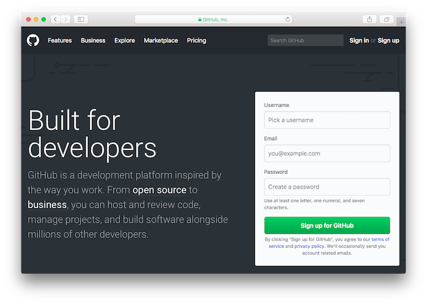
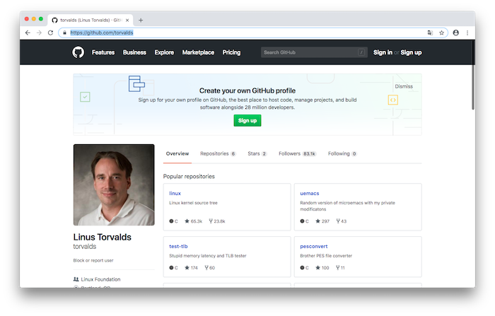
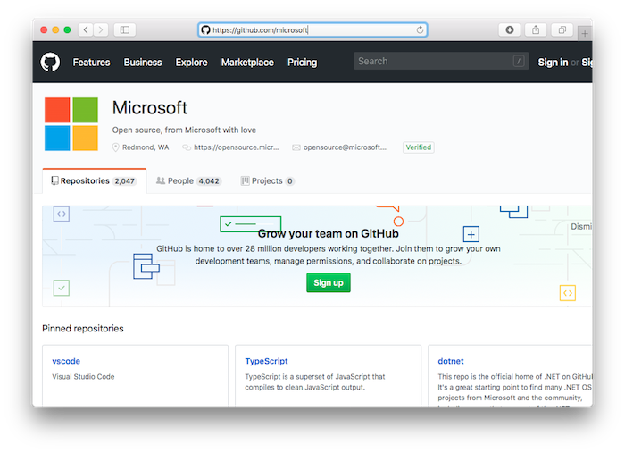
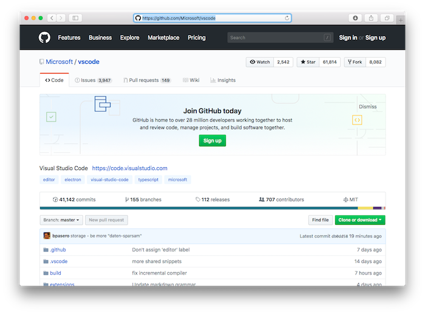
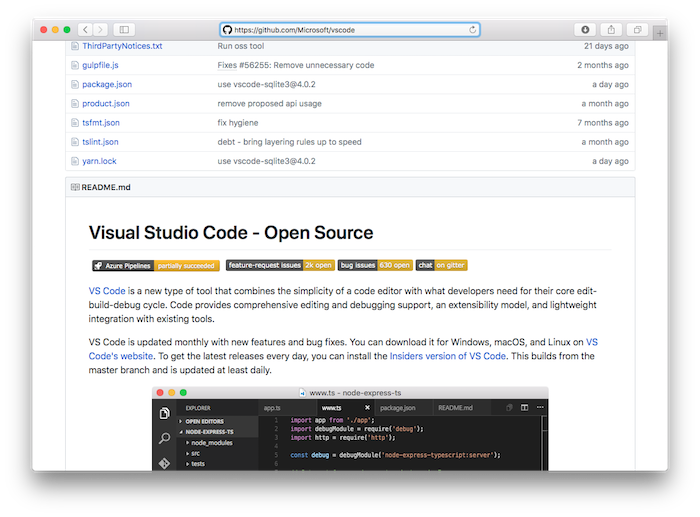

Creando este sitio
En este cuaderno haremos un recorrido por las herramientas utilizadas para organizar esta colección de manuales.
Alojamiento
Cuando vamos a crear un sitio web, el primer paso es buscar un alojamiento en la red para nuestros documentos. Seguramente lo más sencillo sería poner en marcha un blog, con la ayuda de servicios tan populares como Blogger o Wordpress, que nos permiten organizar los contenidos de forma bastante simple. Pero encuentro que son sitios orientados a publicar una lista de artículos por fecha, no estando especializados en el diseño de manuales técnicos, con su índice de capítulos y todo eso, De todas formas he visto mucha gente que, haciendo un apaño, se arregla con esta solución.
Otra posibilidad sería utilizar algo en la línea de wikilibros, pero es un recurso con el que debo confesar que no me siento muy a gusto. En realidad, lo que yo andaba buscando es algo que, además de recoger mis apuntes, me permitiera experimentar un poco con el diseño web.
Una tercera opción sería configurar nuestra propia máquina como servidor, instalando un software de gestión de contenidos y conectado a la red las veinticuatro horas del día. Aunque debo decir que, para un uso personal, no creo que sea necesario complicarse tanto la vida.
Investigando un poco, encontré Read the Docs, un sitio web concebido para publicar manuales, algo que se ajustaba bastante bien a mi idea. Read the Docs genera la documentación a partir de archivos alojados en repositorios como GitHub, el popular sitio de software compartido y trabajo en equipo. Podemos guardar nuestros documentos en esta segunda plataforma, y Read the Docs los tomará y construirá una página web con esos materiales.
El caso es que descubrí que GitHub también cuenta con un servicio similar llamado GitHub Pages, por lo que tras un período inicial de experimentos, decidí prescindir de Read the Docs y usar GitHub Pages para publicar mis cuadernos.
Nota:
Se podría decir que GitHub es lÍder como plataforma de desarrollo compartido de software, pero en junio de 2018 sus creadores lo vendieron a Microsoft por la astronómica cantidad de 7.500 millones de dólares.
El mensaje que Microsoft publicó para confirmar la noticia afirmaba su compromiso de apoyar al mundo del software libre. ¿Cuales son las intenciones del gigante de la informática? Lo cierto es que la operación no ha estado exenta de polémica.
El tiempo dirá como evoluciona GitHub…
El nombre del dominio
Una vez seleccionado el alojamiento, necesitamos un dominio, es decir, el nombre que nos va a identificar en Internet, algo así como www.mipagina.com. Lo primero es comprobar que el nombre que escojamos está libre. En principio bastaría con introducir una búsqueda en nuestro navegador web y ver si obtenemos algún resultado. Si aparece otra página que se llama así, ya podemos ir pensando en otra denominación. Si por el contrario, se muestra un mensaje “no se encuentra el servidor”, no cantemos victoria todavía. Quizás el nombre haya sido adquirido pero no está siendo utilizado. Pero es un buen inicio.
Una vez escogido un nombre de dominio, el siguiente paso será registrarlo. Podemos hacerlo nosotros mismos o buscar un alojamiento que proporcione ese servicio. Por ejemplo, una cuenta de pago en Wordpress, además de permitirnos crear un blog, incluye tener un nombre a la medida.
Si no queremos pagar por un dominio, la alternativa es hacer uso de los subdominios que proporcionan los servicios de alojamiento. En el caso de los citados:
- para blogger: mipagina.blogspot.com
- si usamos wordpress: mipagina.worpress.com
- usando github pages: mipagina.github.io
- con read the docs: mipagina.readthedocs.io
Estas plataformas no solo proporcionan el nombre de un subdominio sin coste alguno. También permiten asociar un nombre que ya tengamos registrado al sitio web que estamos creando.
Explorando GitHub
GitHub es un inmenso repositorio de software compartido, que ha sido concebido para coordinar trabajos desarrollados en equipo, aunque también puede alojar proyectos personales. Podemos experimentar un poco acudiendo a su página web y explorando alguno de los miles de proyectos allí ubicados.
La página principal es https://github.com/. Cuando introducimos esa URL en nuestro navegador, se muestra lo siguiente:

Los proyectos de software se alojan bajo una cuenta de usuario. En la página de portada, el recuadro editable de la barra superior nos permite hacer búsquedas introduciendo nombres de usuario o de proyectos.
Si conocemos el nombre del usuario, otra forma de acceso es introducir directamente en nuestro navegador web la URL:
https://github.com/nombreUsuario
Por ejemplo, si tecleamos https://github.com/torvalds veremos la lista de proyectos de software que Linus Torvalds, el creador del sistema operativo Linux, tiene alojados en GitHub.

Ahora que Microsoft se ha convertido en propietario de GitHub, afirmando su compromiso con el software libre, no está demás curiosear un poco en su lista de proyectos:

Pulsando sobre cualquier proyecto, podemos ver la lista de archivos que lo componen. O bien, introducir directamente la URL:
https://github.com/nombreUsuario/nombreProyecto
Por ejemplo, para ver el repositorio donde se aloja el popular editor Visual Studio Code de Microsoft, tecleamos https://github.com/Microsoft/vscode :

La vista de un repositorio incluye la lista de ficheros allí almacenados, con frecuencia organizados en carpetas. Es costumbre que el directorio raíz incluya un archivo de texto llamado README.md para mostrar un resumen del proyecto. GitHub lo suele visualizar a continuación de la lista de archivos:

Los archivos con la extensión .md o .markdown son documentos de texto markdown, un formato muy popular entre los usuarios de GitHub para redactar documentos, como veremos más adelante.